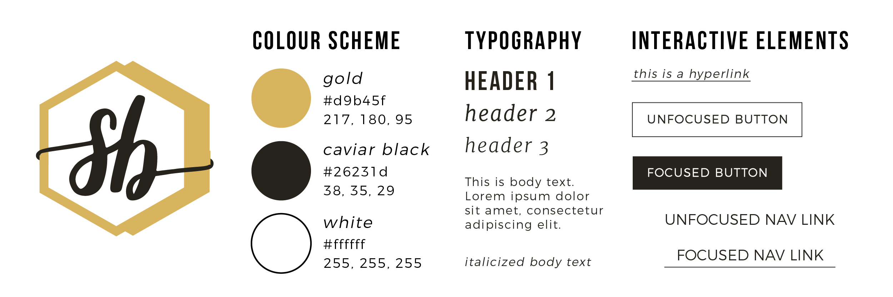

background
As I start to apply for co-op positions, I took it upon myself to start designing my own personal branding and a portfolio website, which I coded by hand. This portfolio website aims to showcase both academic and professional projects I took part in, ranging from graphic design, UI/UX design, web development, and instructional design.
challenge
Although I was already well-versed in HTML and CSS, to simulate responsiveness, I had to familiarize myself with JavaScript (particularly jQuery). Before this project, I only had a shallow understanding of JavaScript and jQuery, so I had to read and understand various printed and online resources during the project to increase my fluency.
role
I was the primary designer and web developer for this project. Initially, I sketched out potential logos and layouts digitally and then used Axure RP to create wireframes for the website. Meanwhile, my personal logo was developed using Adobe Illustrator, while I used Sublime Text as a code editor for my portfolio website.
ideation
I started this project by sketching possible logos for my personal branding. I wanted to develop a brand that encapsulated my aspirations as a designer that loves to program. In some way, I used the idiom "package deal" as inspiration for my final logo, with each aspect of myself represented through a pentagon - the colourful gold one symbolizing my "designer" side, the monochrome one symbolizing my austere "programmer" side, tied together using a script font of my initials "SB".
Using the message conveyed in my final logo, I started sketching possible layouts for my website. Instead of having a common top navigation bar, driven by the principle that people read from left to right, I wanted to have my navigation as a left sidebar. The portfolio entries would then be laid out as a 3-column grid, which would collapse into a 2-column grid on tablets and 1-column on mobile phones. Upon clicking one of the portfolio entries, a modal box describing the experience would pop-up.

wireframes


execution
I took my final logo sketch and created it on Adobe Illustrator. The colour scheme started from a golden-brown colour combining an earthy brown from package wrapping paper and my personal preference for gold, along with the timeless pair of black and white.
As for my portfolio website, as I started developing it, I changed many of my initial design decisions:
- Instead of the modal box for every portfolio entry, I reserved separate pages with a redirect button for each one, because the modal box was very dense looking and thus limited the amount of content I can include for each entry.
- After receiving feedback from my co-op advisor, instead of a single-line title banner for each portfolio entry image appearing on hover, a white box with the title of the portfolio entry and the design domain it belonged to.
- The filter feature originally was a dropdown in the sidebar, but was moved to the top of the portfolio entry images for better visibility and relevancy.
results
At many times, especially when I was considering if I should deviate from my initial wireframes, I was internally struggling between aesthetic flair versus simplicity and functionality . In the end, I always chose simplicity and functionality because I wanted to make sure users of my website could easily find, read, and understand my portfolio and its entries, as well as get a sense of what my priorities are when I am designing and developing a website.
The code for this project can be found on my GitHub or by clicking here.